원격 스마트 주차 보조 작동
주차/뷰 버튼
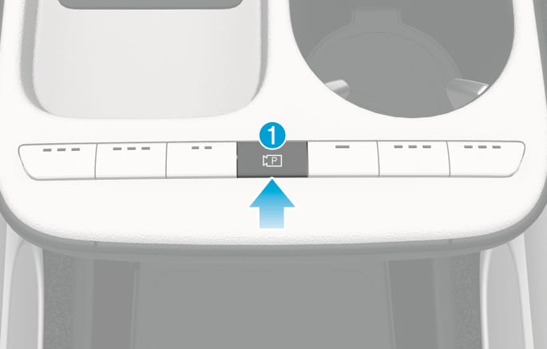
2C_RearTopViewFunction
주차/뷰 버튼(1)을 길게 누르면 원격 스마트 주차 보조 및 주차 거리 경고가 켜집니다. 스마트 주차 또는 스마트 출차 작동 중 누르고 있으면 주차 또는 출차를 시작합니다.
상황에 따라 작동 방법이 다르므로 자세한 내용은 기능 설명을 참고하십시오.
전진/후진 버튼(스마트 키)
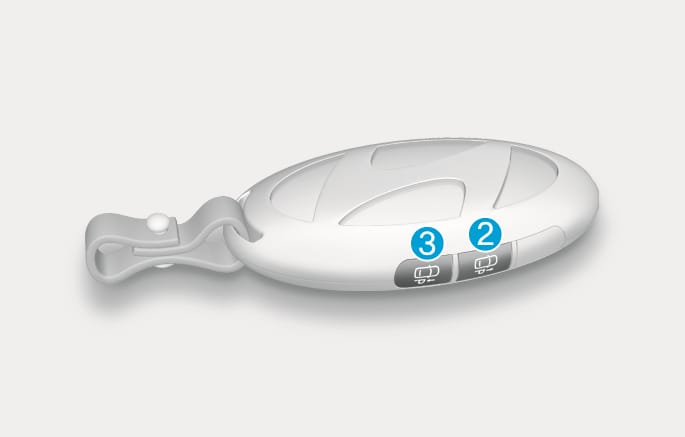
2C_RSPASmartKeyButton
스마트 키의 전진 버튼(2) 또는 후진 버튼(3)을 누르고 있으면 해당 방향으로 원격 전/후진 또는 원격 주차 기능이 작동합니다.
상황에 따라 작동 방법이 다르므로 자세한 내용은 기능 설명을 참고하십시오.
원격 스마트 주차 보조가 작동하면 주차 거리 경고, 후방 모니터, 서라운드 뷰 모니터가 함께 작동합니다. 자세한 내용은 7장 '주차 거리 경고 (PDW)' 및 '후방 모니터 (RVM)', '서라운드 뷰 모니터 (SVM)'를 참고하십시오.
스마트 키를 이용하여 차량 밖에서 차량을 전/후진할 수 있습니다.
다음은 원격 전/후진 기능 사용의 예입니다.
-
원격 시동 후 작동하는 경우
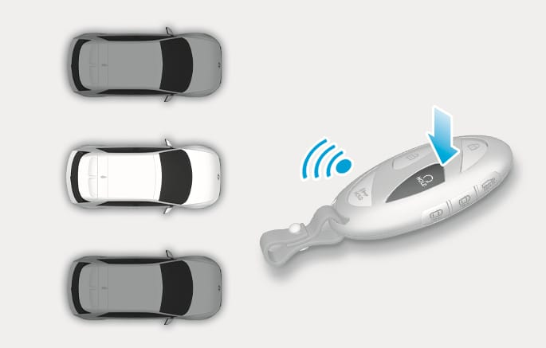
2C_RemoteForwardRewardProcedure
-
차량으로부터 일정 범위 내에서 스마트 키의 도어 잠금 (
Ď ) 버튼을 눌러 도어를 잠급니다. -
약 4초 내에 원격 시동 (
Ĕ ) 버튼을 길게 눌러 시동을 겁니다. -
원하는 위치에 차량이 이동할 때 까지 스마트 키의 전진 (
đ ) 버튼 또는 후진 (Į ) 버튼을 누릅니다. -
이동 완료 후 도어를 열면 자동으로 'P'(주차)로 변속하고 전자식 파킹 브레이크(EPB)를 체결하지만 시동 상태는 유지됩니다. 스마트 키를 휴대하고 차량에 탑승하여 주행할 수 있습니다.
-
이동 완료 후 원격 시동 (
Ĕ ) 버튼을 누르면 자동으로 'P'(주차)로 변속하고 전자식 파킹 브레이크(EPB)를 체결하며 시동이 꺼집니다.
-
-
-
원격 시동 후 작동 하면 출차 상황으로 판단합니다. 차량을 약 4 m 전진 이동한 시점부터는 차량 주변의 사람, 동물 또는 물체를 확인하여 전방 상황에 따라 스티어링 휠을 제어합니다.
-
원격 후진의 경우 스티어링 휠을 정렬한 후에 직진으로만 이동합니다.
-
원격 시동에 대한 자세한 내용은 6장 '원격 시동 작동하기'를 참고하십시오.
-
시동이 켜진 상태에서 작동하는 경우
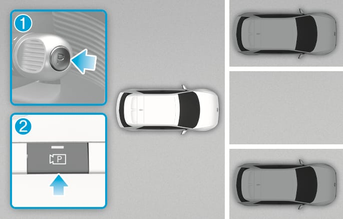
2C_RemoteForwardRewardProcedure_2
-
전/후진 하려는 공간 앞에 차량을 정렬한 후 'P'(주차)로 변속합니다.
-
주차/뷰 (
ā ) 버튼을 길게 눌러 원격 스마트 주차 보조를 켭니다. 인포테인먼트 시스템 화면에 안내문이 표시됩니다. -
스마트 키를 휴대하고 차에서 내린 후 모든 도어 및 테일게이트를 닫습니다.
-
원하는 위치에 차량이 이동할 때 까지 스마트 키의 전진 (
đ ) 버튼 또는 후진 (Į ) 버튼을 누릅니다. -
이동 완료 후 도어를 열면 자동으로 'P'(주차)로 변속하고 전자식 파킹 브레이크(EPB)를 체결하지만 시동 상태는 유지됩니다. 스마트 키를 휴대하고 차량에 탑승하여 주행할 수 있습니다.
-
이동 완료 후 원격 시동 (
Ĕ ) 버튼을 누르면 자동으로 'P'(주차)로 변속하고 전자식 파킹 브레이크(EPB)를 체결하며 시동이 꺼집니다.
-
-
-
시동이 켜진 상태에서 작동하는 경우 차량 속도 5 km/h 이상 주행한 후에 원격 전/후진 기능을 사용할 수 있습니다.
-
시동이 걸린 상태에서 원격 전진을 시작하면, 주차 상황으로 판단하여 전방 상황에 따라 스티어링 휠을 제어하여 주차 공간 진입 및 차량 정렬을 합니다.
차량 주변에서 감지된 사람, 동물, 주차구획선 또는 물체의 형상, 위치 등에 따라 성능이 저하될 수 있습니다.
-
원격 전/후진 기능 안내 중 주차/뷰 (
ā ) 버튼을 누르거나, 'P'(주차) 단에서 다른 단으로 변속하거나, 주차 안전 (ÿ ) 버튼을 누르거나, 인포테인먼트 시스템 안내 화면의 취소를 선택하면 작동이 종료됩니다.
-
원격 전진 또는 후진을 시작하기 전에 차량 내 모든 탑승자가 내렸는지 확인하십시오.
-
차량이 방전되거나 기능 이상이 발생하면 원격 전/후진 기능이 작동할 수 없습니다. 차량에 탑승할 수 있도록 여유 공간이 있는 곳에 주차하십시오.
-
주차 공간의 환경 또는 환경의 변화로 원격 전/후진 기능으로 진입한 공간에서 원격 전/후진 기능으로 이동하지 못할 수 있습니다. 이 경우 직접 운전하십시오.
-
원격 전/후진 기능 종료 및 해제 후 차량을 떠나기 전에, 모든 창문과 선루프를 닫고 시동이 꺼졌는지 확인한 후 도어를 잠그십시오.
-
원격 전/후진 기능을 작동하기 전에 모든 스마트 키가 차량 밖에 있는지 확인하십시오.
-
차량으로부터 약 4 m 내에서 스마트 키를 조작해야 합니다. 스마트 키의 버튼을 누르고 있어도 차량이 이동하지 않으면 작동 범위 내로 이동한 후 버튼을 조작하십시오.
-
스마트 키의 감지 거리는 주변 환경(송전탑, 방송국과 같이 전파의 영향이 강한 지역 등)에 따라 달라질 수 있습니다.
-
차량 주변에서 감지된 사람, 동물 또는 물체의 형상, 위치 등에 따라 성능이 저하될 수 있습니다.
차량 안에서 주차/뷰 (
다음은 스마트 주차 기능과 원격 주차 기능의 사용 예 입니다.
|
제공 기능 |
|
직각 후진 주차 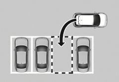 |
|
사선 후진 주차 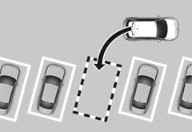 |
|
평행 후진 주차 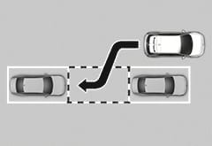 |
-
원격 스마트 주차 보조 켜기
시동 중 브레이크 페달을 밟고 'D'(주행) 또는 'N'(중립)에서 주차/뷰 (
ā ) 버튼을 길게 누르면 원격 스마트 주차 보조가 켜집니다. -
주차 공간 탐색
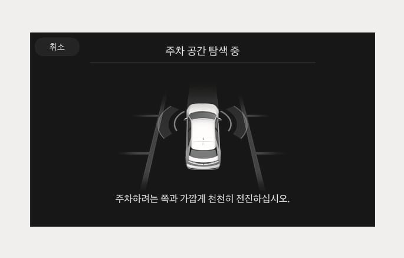
2C_SearchParkingSpace
주차 공간과 약 1 m의 일정 간격을 유지하면서 천천히 전진하십시오. 주차선 또는 주차된 차량의 옆 또는 앞뒤 공간을 감지하여 주차 공간을 탐색합니다.
주차 공간이 인식되면 알림음과 함께 주차 공간 탐색 완료 안내문이 인포테인먼트 시스템 화면에 표시됩니다. 주차할 수 있는 주차 유형과 서라운드 뷰 모니터의 탑 뷰 화면에 탐색된 주차 위치가 표시됩니다.
-
주차 유형 선택
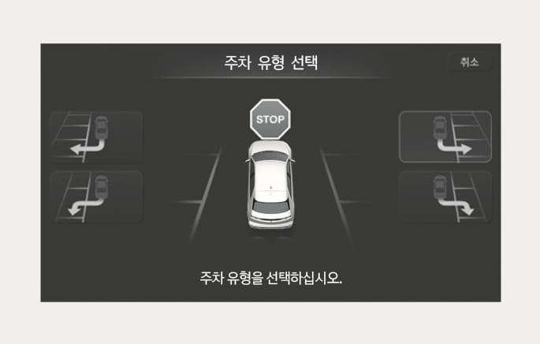
2C_SelectParkingTypeAndFunction
브레이크 페달을 밟아 정차한 후 인포테인먼트 시스템 화면을 터치하여 원하는 주차 유형을 선택합니다. 직각(좌측/우측), 평행(좌측/우측), 사선(좌측/우측), 후진 주차 중 표시된 유형을 선택할 수 있습니다.
-
주차 방식 선택
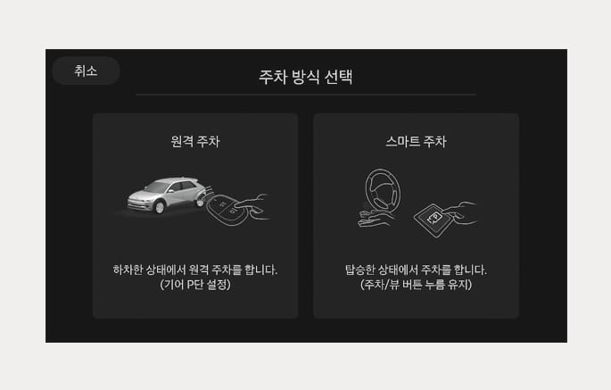
2C_SelectParkingType
인포테인먼트 시스템 화면에서 원격 주차 기능과 스마트 주차 기능 조작 중 기능을 선택할 수 있습니다.
-
원격 주차
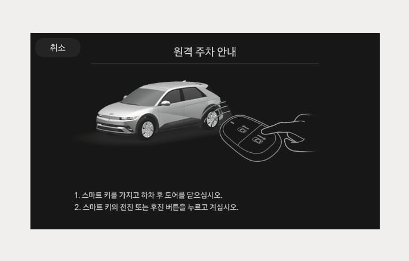
2C_RemoteParkingInstructions
-
브레이크 페달을 밟아 정차하고 'P'(주차)로 변속하십시오.
-
스마트 키를 휴대하고 차에서 내린 후 모든 도어를 닫으십시오.
-
스마트 키의 전진 (
đ ) 버튼 또는 후진 (Į ) 버튼을 누르십시오.-
버튼을 누르고 있으면 원격 스마트 주차 보조 시스템이 스티어링 휠, 차량 속도, 변속을 자동으로 제어합니다.
-
원격 주차 기능 작동 중에 버튼을 놓으면 차량이 멈추고 제어를 일시적으로 중지합니다. 다시 버튼을 누르면 기능이 작동합니다.
-
-
주차가 완료될 때까지 전진 (
đ ) 버튼 또는 후진 (Į ) 버튼을 누른 상태로 유지하십시오.-
차량이 목표 주차 위치에 도달하면 주차 완료 안내문이 화면에 표시됩니다. 원격 스마트 주차 보조는 자동으로 'P'(주차)로 변속하고 전자식 파킹 브레이크(EPB)를 체결한 후 시동을 끕니다.
-
-
차량 정렬 상태 및 위치 변경이 필요한 경우 직접 주차를 완료하십시오.
-
-
스마트 주차
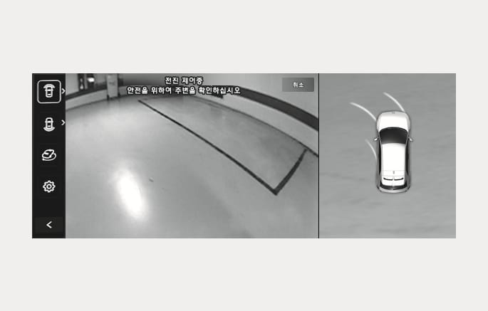
2C_SmartParking_1
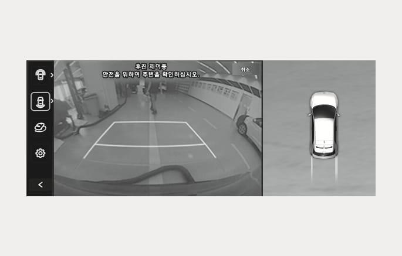
2C_SmartParking_2
-
브레이크 페달을 밟아 정차하고 주차/뷰 (
ā ) 버튼을 누르십시오. -
주차/뷰 (
ā ) 버튼을 누른 상태에서 브레이크 페달에서 발을 떼십시오.-
스티어링 휠, 차량 속도, 변속을 자동으로 제어합니다.
-
스마트 주차 기능 작동 중에 버튼을 놓으면 차량이 멈추고 제어가 일시적으로 중지됩니다. 다시 버튼을 누르면 기능이 작동합니다.
-
-
주차가 완료될 때까지 주차/뷰 (
ā ) 버튼을 누른 상태로 유지하십시오.-
차량이 목표 주차 위치에 도달하면 주차 완료 안내문이 화면에 표시됩니다. 원격 스마트 주차 보조는 자동으로 'P'(주차)로 변속하고 전자식 파킹 브레이크(EPB)를 체결합니다.
-
-
차량 정렬 상태 및 위치 변경이 필요한 경우 직접 주차를 완료하십시오.
-
주차 기능 작동 중 종료 방법
다음 각 각의 방법으로 기능을 종료할 수 있습니다.
-
주차 안전 (
ÿ ) 버튼을 누르거나 인포테인먼트 시스템 안내 화면의 취소를 선택하십시오. -
주차 공간 탐색, 주차 유형 선택 단계인 경우, 주차/뷰 (
ā ) 버튼을 누르십시오. -
주차 공간 탐색, 주차 유형 선택, 주차 기능 선택 0단계인 경우, 'R'(후진)로 변속하십시오.
-
스마트 주차 기능 작동 중 브레이크 페달을 밟아 정차한 경우, 현재 기어와 다른 기어로 변속하십시오. 이때 전자식 파킹 브레이크(EPB)는 체결되지 않습니다.
-
원격 주차 기능 작동 중인 경우, 스마트 키의 원격 시동 (
Ĕ ) 버튼을 누르십시오.
원격 스마트 주차 보조가 안내한 주차 유형 선택 전에 주차를 할 수 있는 공간인지 직접 확인하십시오. 원격 스마트 주차 보조가 탐색한 주차 공간이 좁거나 주차에 부적합한 공간일 경우 주차 유형을 선택하지 말고 차량을 이동하여 다른 주차 공간을 탐색하십시오.
-
원격 주차 기능을 시작하기 전에 차량 내 모든 탑승자가 내렸는지 확인하십시오.
-
모든 창문과 선루프를 닫고 시동이 꺼졌는지 확인한 후에 도어를 잠그십시오.
-
시동 후 5 km/h 이상의 속도로 주행한 이력이 있으면, 주차 상황으로 판단합니다.
-
원격 스마트 주차 보조는 주차선이 보이거나 주차된 차량이 있는 경우에만 주차 공간 탐색이 가능합니다.
주행 후 생긴 빈자리 또는 아직 주행하지 않은 차량 앞쪽의 빈 공간은 주차 공간으로 탐색할 수 없습니다.
-
주차 구획 이외에도 차량이 주차할 수 있는 공간도 주차 공간으로 인식 합니다.
-
20 km/h 이하의 속도로 주차 공간을 탐색하세요. 속도가 30 km/h를 초과하면 원격 스마트 주차 보조가 해제됩니다.
-
원격 스마트 주차 보조는 주차 공간 이외에도 차량이 움직일 수 있는 공간이 충분할 경우에만 주차 공간 탐색을 완료합니다.
-
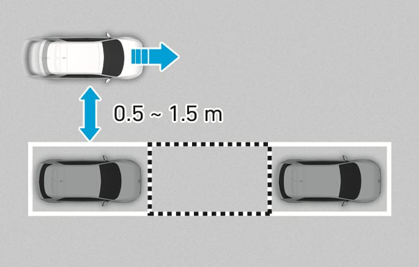
2C_ParkingSpaceDistance
주차 공간 탐색 시 주차된 차량과의 거리가 0.5 m 미만이거나 1.5 m 이상 떨어져서 주행하는 경우에는 주차 공간을 인식하지 못할 수 있습니다.
-
주차된 차량과 일정한 간격을 유지하지 않을 경우 주차 공간 탐색 성능이 저하될 수 있습니다.
-
초음파센서의 성능이 정상적이지 않거나 주위 환경의 영향으로 주차 공간이 있음에도 탐색을 못할 수 있으며, 반대로 주차하기에 좁은 공간 또는 부적합한 주차 공간을 주차 공간으로 인식할 수 있습니다.
-
주차 공간 내 경사가 있거나, 비스듬히 주차 공간을 탐색하게 되면, 실제 주차 유형과 다른 유형으로 인식 결과를 표시할 수 있습니다. 이럴 경우 주차 유형을 선택하지 말고 차량을 이동하여 다른 주차 공간을 탐색하십시오.
-
원격 스마트 주차 보조가 탐색한 주차 유형을 인포테인먼트 시스템 화면에 표시하는 동안 정차하지 않고 계속 주행하면 주차 공간 탐색 단계로 돌아갑니다.
-
주차 유형 선택 전에 주차/뷰 (
ā ) 버튼을 눌러 주차 기능을 종료한 경우, 정차 상태에서 주차/뷰 (ā ) 버튼을 다시 길게 누르면 주차 유형 선택 단계 화면으로 이동합니다. -
주차 기능 안내 중에는 브레이크 페달에서 발을 떼지 마십시오. 차량이 움직이면 원격 스마트 주차 보조가 해제됩니다.
-
운전자가 인포테인먼트 시스템 화면의 주차 기능을 터치하면 원격 스마트 주차 보조는 각 주차 기능 작동에 대한 상세 절차를 표시합니다.
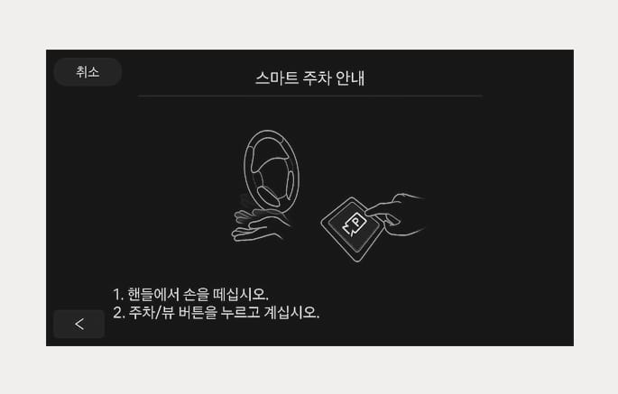
2C_SmartParkingInstructions
원격 스마트 주차 보조가 원격 주차 기능으로 작동할 수 없는 경우 스마트 주차 안내문만 인포테인먼트 시스템 화면에 표시됩니다.
-
원격 주차 기능을 작동하기 전에 모든 스마트 키가 차량 밖에 있는지 확인하십시오.
-
차량으로부터 약 4 m 내에서 스마트 키를 조작해야 합니다. 스마트 키의 버튼을 누르고 있어도 차량이 이동하지 않으면 작동 범위 내로 이동한 후 버튼을 조작하십시오.
-
스마트 키의 감지 거리는 주변 환경(송전탑, 방송국과 같이 전파의 영향이 강한 지역 등)에 따라 달라질 수 있습니다.
-
서라운드 뷰 모니터 화면에 표시되는 탐색된 주차 위치는 원격 주차 기능으로, 차량이 주차 공간에 처음 진입할 때까지만 표시됩니다.
-
원격 스마트 주차 보조는 주차 환경에 따라 스토퍼에 부딪히며 주차 기능을 완료할 수 있습니다.
-
서라운드 뷰 모니터 화면에 표시되는 주차 위치는 스마트 주차 기능으로, 차량이 주차 공간에 처음 진입할 때까지만 표시합니다.
-
스마트 주차 기능 작동 중 운전자가 브레이크 페달을 밟아 감속할 수 있으나, 가속 페달로 가속할 수는 없습니다.
-
차량 외부에서 원격 주차 기능으로 차량 이동을 시작하기 전에 차량 내 스마트 키가 남아있지 않도록 하십시오. 차량 내 여분의 스마트 키가 있는 경우 원격 주차 기능이 작동하지 않습니다.
-
도어가 열려 있거나 안전벨트를 착용하지 않은 상태에서는 스마트 주차 기능이 작동하지 않습니다.
차량 안에서 주차/뷰 (
다음은 스마트 출차 기능의 사용 예 입니다.
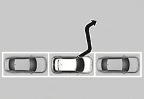
TM_ParallelForwardExit
-
시동 후 브레이크 페달을 밞고 'P'(주차) 또는 'N'(중립) 단에서 주차/뷰 (
ā ) 버튼을 길게 눌러 원격 스마트 주차 보조를 켭니다. -
브레이크 페달을 밟아 정차한 상태에서 차량 센서로 주변 물체와의 거리를 감지하여 평행 출차 가능한 공간을 탐색합니다.
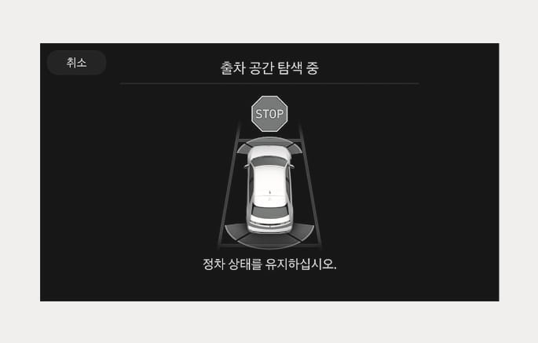
2C_CheckingSpace
출차 공간 탐색이 완료되면 알림음과 함께 출차 공간 탐색 완료 안내문이 인포테인먼트 시스템 화면에 표시됩니다.
-
브레이크 페달을 밟아 정차한 상태에서 인포테인먼트 시스템 화면을 터치하여 원하는 출차 방향을 선택하십시오.
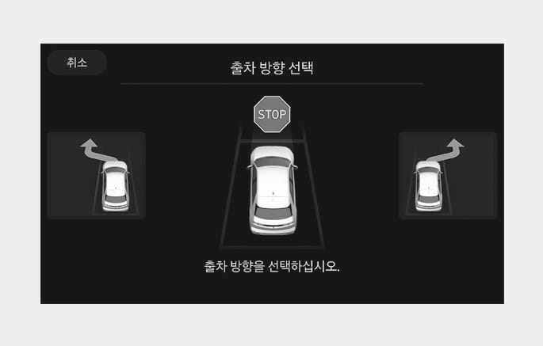
2C_SelectExitDirection
-
스마트 출차
2C_SmartExitInstructions
-
브레이크 페달을 밟아 정차한 상태에서 주차/뷰 (
ā ) 버튼을 누르십시오. -
주차/뷰 (
ā ) 버튼을 누른 상태에서 안내에 따라 브레이크 페달에서 발을 떼십시오.-
원격 스마트 주차 보조가 스티어링 휠, 차량 속도, 변속을 자동으로 제어합니다.
-
스마트 출차 기능 작동 중에 버튼을 놓으면 차량이 멈추고 제어가 일시적으로 중지합니다. 다시 버튼을 누르면 기능이 작동합니다.
-
-
출차가 완료될 때까지 주차/뷰 (
ā ) 버튼을 누른 상태로 유지하십시오.-
차량이 목표 출차 위치에 도달하면 출차 완료 안내문이 화면에 표시됩니다.
-
스마트 출차 기능 완료 후 약 4초 내에 브레이크 페달이나 가속 페달을 밟지 않으면 원격 스마트 주차 보조는 안전을 위해 'P'(주차)로 변속하고 전자식 파킹 브레이크(EPB)를 체결합니다.
-
-
스마트 출차 기능 작동 중 종료 방법
다음 각 각의 방법으로 기능을 종료할 수 있습니다.
-
주차 안전 (
ÿ ) 버튼을 누르거나 인포테인먼트 시스템 안내 화면의 취소를 선택하십시오. -
출차 공간 탐색, 출차 방향 선택 단계인 경우, 주차/뷰 (
ā ) 버튼을 누르십시오. -
출차 공간 탐색, 출차 방향 선택 단계인 경우, 'R'(후진)로 변속하십시오.
-
스마트 출차 기능 작동 중 브레이크 페달을 밟아 정차한 경우, 현재 표시된 기어와 다른 기어로 변속하십시오. 이때 전자식 파킹 브레이크(EPB)는 체결되지 않습니다.
-
원격 스마트 주차 보조가 출차 공간 탐색 중 출차 방향에 충돌 위험이 있는 사람, 동물 또는 물체가 감지되면 안전을 위해 스마트 출차 기능이 해제됩니다.
-
차량 센서의 사각지대인 측면에 있는 사람, 동물 또는 물체는 감지할 수 없습니다. 반드시 출차 방향의 공간을 직접 확인하십시오.
-
원격 스마트 주차 보조가 안내한 출차 방향을 선택하기 전에 출차를 할 수 있는 공간인지 직접 확인하십시오. 원격 스마트 주차 보조가 탐색한 출차 공간이 좁거나 부적합한 공간(주변 차량이 직각 주차된 경우 등)일 경우 스마트 출차 기능을 사용하지 마십시오.
-
시동 후 5 km/h 이상으로 주행한 이력이 없어야 출차 상황으로 인식합니다.
-
인포테인먼트 시스템 화면에서 동의를 선택한 후 인포테인먼트 시스템이 정상적으로 작동해야 스마트 출차 기능을 사용할 수 있습니다.
-
원격 스마트 주차 보조에 의한 평행 주차 완료 후에 원격 스마트 주차 보조를 다시 켰을 경우 스마트 출차 기능을 사용할 수 있습니다.
-
초음파센서의 성능이 정상적이지 않거나 주위 환경의 영향으로 출차 공간이 있음에도 탐색을 못할 수 있으며, 출차 하기에 알맞지 않은 공간을 출차 공간으로 탐색할 수 있습니다. 자세한 내용은 원격 스마트 주차 보조의 제한 사항을 참고하십시오.
-
스마트 출차 기능 작동 중 운전자가 브레이크 페달을 밟아 감속할 수 있으나, 가속 페달을 밟아 가속할 수는 없습니다.
-
운전자가 브레이크 페달을 밟고 있는 상태에서 스마트 출차 기능을 완료한 경우, 원격 스마트 주차 보조 는 'D'(주행)를 유지합니다.
-
가속 페달을 밟고 있는 상태에서 출차가 완료된 경우, 가속 페달에서 발을 완전히 뗐다가 다시 밟아야 가속할 수 있습니다.
-
스마트 출차 기능 완료 후에 주위 도로 상황을 판단하여 안전하게 주행하십시오.
-
도어가 열려 있거나 안전벨트를 착용하지 않은 상태에서는 스마트 출차 기능이 작동하지 않습니다.
-
스마트 출차 기능 완료 후 약 4초 내에 브레이크 페달이나 가속 페달을 밟지 않으면 원격 스마트 주차 보조는 안전을 위해 'P'(주차)로 변속하고 전자식 파킹 브레이크(EPB)를 체결합니다.
주차 기능 작동 상태 표시
-
원격 전/후진, 원격 주차 기능은 스마트 키의 LED, 비상 경고등, 방향지시등으로 작동 상태를 표시합니다.
작동 상태
스마트 키 LED
비상 경고등
방향 지시등
제어 중
초록색으로 깜빡임
-
원격 주차 기능 작동 시 첫 번째 후진 중 주차 방향으로 깜빡임
일시 중지
빨간색으로 깜빡임
깜빡임
-
해제
빨간색이 4초 켜진 후 꺼짐
3회 깜빡인 후 꺼짐
-
완료
초록색이 4초 켜진 후 꺼짐
1회 깜빡인 후 꺼짐
-
-
스마트 주차 제어 중일 때는 첫 번째 후진 중 주차 방향의 방향지시등이 깜빡입니다.
-
스마트 출차 제어 중일 때는 출차 완료 또는 기능 해제 시까지 출차 방향의 방향지시등이 깜빡입니다.
스마트 키가 작동 범위(차량으로부터 약 4 m) 밖에 있을 경우 스마트 키 LED를 정상적으로 표시할 수 없습니다. 작동 범위 내에서 사용하십시오.
다음의 경우에는 기능이 일시적으로 중지하고 차량이 자동으로 정차합니다. 일시 중지 조건이 없어지면 다시 작동합니다.
-
차량 이동 방향에 사람, 동물 또는 물체가 감지될 경우
-
도어나 테일게이트를 열 경우
-
원격 전/후진 주차, 원격 주차 중
-
스마트 키 전진 (
đ ) 버튼 또는 후진 (Į ) 버튼을 누르고 있지 않을 경우 -
동시에 여러 개의 스마트 키 버튼을 누를 경우
-
스마트 키가 차량으로부터 약 4 m 이상 벗어날 경우
-
작동 중인 스마트 키 외에 다른 스마트 키의 버튼을 누를 경우 (원격 시동 버튼 제외)
-
후진 중에 후측방 충돌방지 보조 또는 후방 교차 충돌방지 보조가 작동할 경우
-
원격 전/후진 주차 시 버튼을 계속 눌러 7 m를 이동할 경우
-
-
스마트 주차, 스마트 출차 중
-
운전자가 안전벨트를 착용하지 않은 경우
-
후진 제어 중에 후측방 충돌방지 보조 또는 후방 교차 충돌방지 보조가 작동할 경우
-
주차/뷰 (
ā ) 버튼을 누르고 있지 않을 경우 -
브레이크 페달을 밟아 차량을 정차할 경우
-
다음의 경우에는 기능이 해제되고 차량이 정차하며, 'P'(주차)단으로 변속 및 전자식 파킹 브레이크(EPB) 체결 후 시동이 꺼집니다.
-
스티어링 휠을 조작하는 경우
-
변속하는 경우
-
차량 이동 중 전자식 파킹 브레이크(EPB)를 조작하는 경우
-
후드를 여는 경우
-
급가속이 발생하는 경우
-
차량 밀림이 발생하는 경우
-
바퀴가 장애물에 걸려 이동할 수 없는 경우
-
도로의 경사도가 작동 가능한 범위를 초과하는 경우
-
1분 이상 일지 중지된 상태를 지속하는 경우
-
원격 스마트 주차 보조 작동 후 약 3분 50초가 지난 경우
-
스티어링 휠, 변속, 제동, 구동 제어가 정상적으로 작동하지 않는 경우
-
타이어가 미끄러져 차체 자세 제어(ESC) 장치, 미끄럼 방지 (TCS) 장치, ABS 장치가 작동하는 경우
-
충전 도어가 열려 있는 경우
-
원격 전/후진 주차, 원격 스마트 주차 중
-
가속 페달 또는 브레이크 페달을 밟는 경우
-
운전석 도어가 열린 상태에서 브레이크 페달을 밟았을 때 스마트 키가 차량 밖에 있는 경우
-
원격 전/후진 작동으로 14m 이상 이동한 경우
-
스마트 키 고장 또는 배터리가 부족한 경우
-
도난 경보 장치의 경고음이 울리는 경우
-
차량 앞뒤에 사람, 동물 또는 물체가 가까이 있는 경우 (원격 스마트 주차)
-
-
스마트 주차, 스마트 출차 중
-
운전자가 안전벨트를 착용하지 않은 상태에서 도어를 여는 경우
-
차량 앞뒤에 사람, 동물 또는 물체가 가까이 있는 경우
-